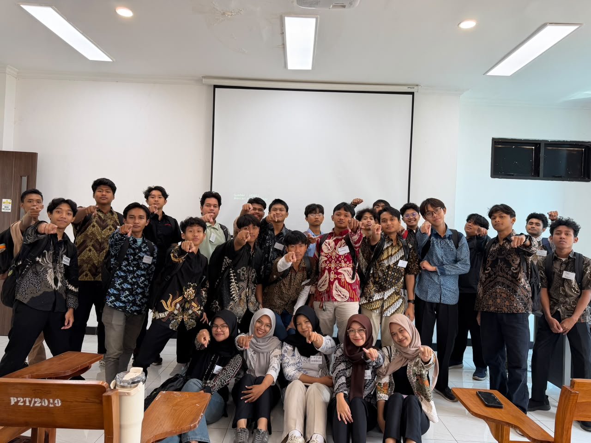
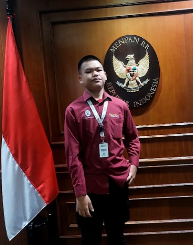
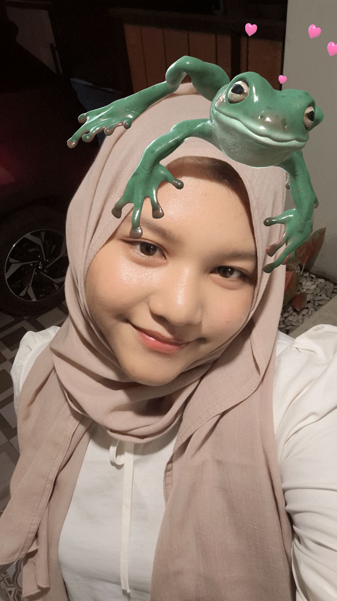
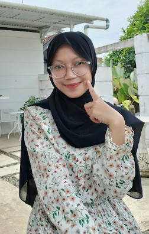
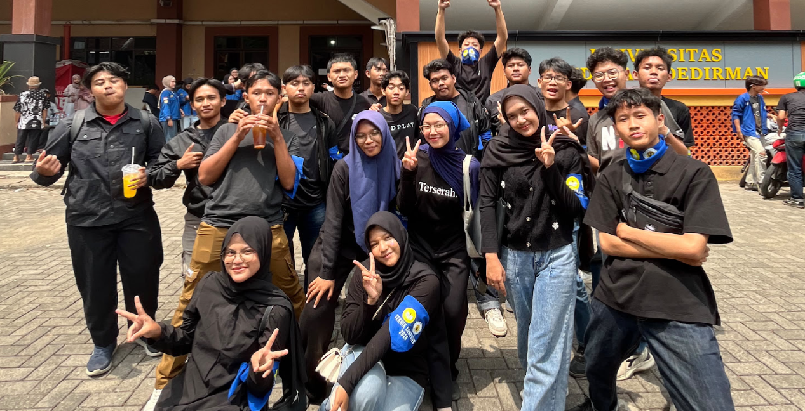

Fakultas Teknik, Universitas Jenderal Soedirman.

Wadah koordinasi mahasiswa angkatan 2026 untuk mempermudah penyampaian informasi akademik, tugas perkuliahan, serta kegiatan bersama.

PJ Kelas
NIM: H1H026062
PJ Mata Kuliah
NIM: H1H026050

Bendaraha Kelas
NIM: H1H026042

PJ Mata Kuliah
NIM: H1H026045
Berikut adalah kegiatan rutin kelas untuk mendukung kelancaran kuliah:

Chant penyambutan para wisudawan Program Studi Informatika
Menggunakan pakaian batik pada hari-hari tertentu.
Silakan hubungi pengurus melalui kanal berikut:
Instagram: @tekkomunsoed26
Email: tekkomunsoed26@email.com
Lokasi: Fakultas Teknik